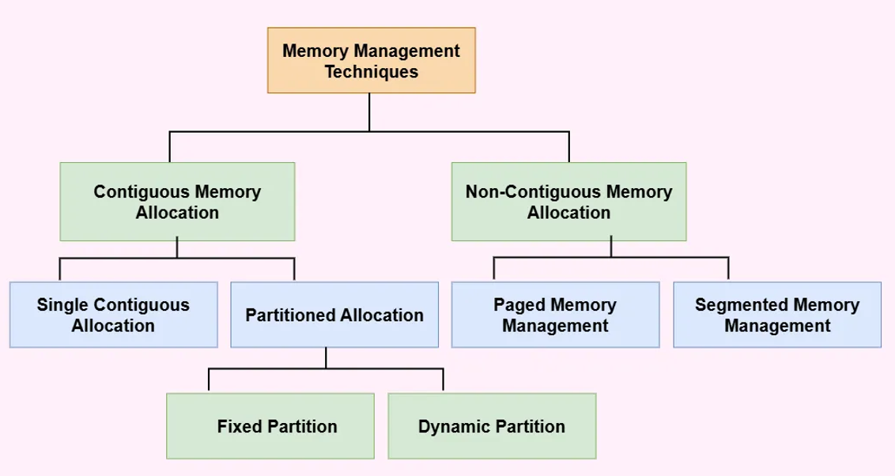
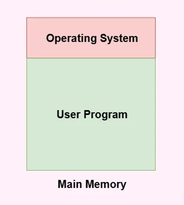
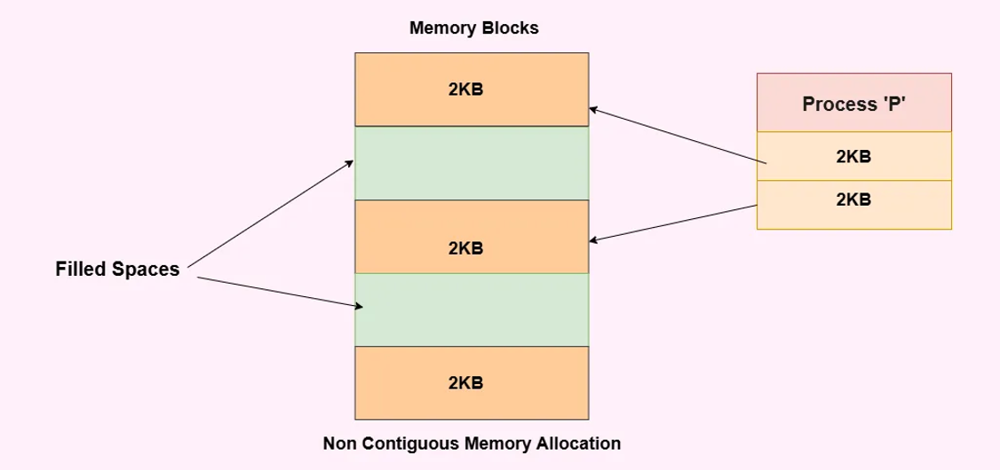
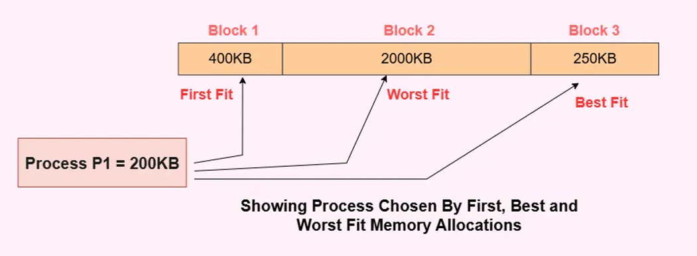
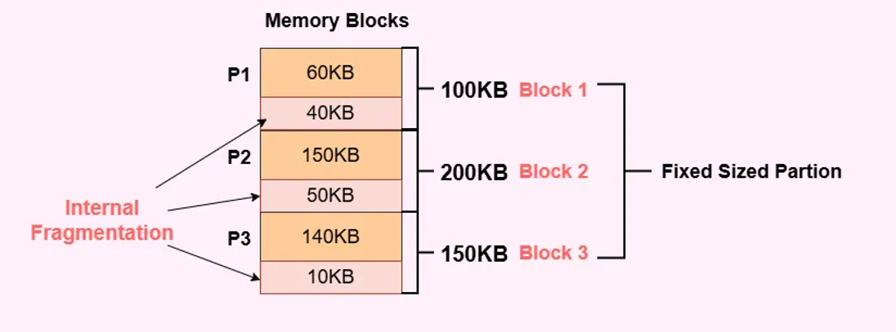
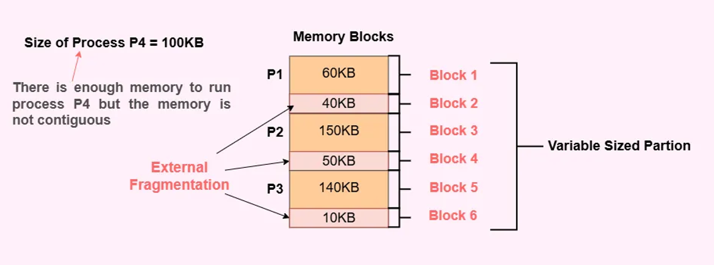

Memory management is responsible for allocating and deallocating memory space to processes efficiently.
The operating system maintains a list of free memory blocks (holes) and allocated blocks and must decide which free block to assign when a new process arrives using allocation strategies such as First-Fit, Best-Fit and Worst-Fit.

The main memory is a combination of two main portions - one for the operating system and the other for the user program.

Contiguous Memory Allocation: Contiguous memory allocation is basically a method in which a single contiguous section/part of memory is allocated to a process or file needing it.
Non-Contiguous Memory Allocation: Non-Contiguous memory allocation is basically a method on the contrary to the contiguous allocation method, allocating the memory space present in different locations to the process as per its requirements.

Difference Between Contiguous and Non-Contiguous Memory Allocation
| S.No. | Contiguous Memory Allocation | Non-Contiguous Memory Allocation |
|---|---|---|
| 1 | Allocates a single, consecutive block of memory to a process. | Allocates separate, scattered blocks of memory to a single process. |
| 2 | Faster execution time and easier for the Operating System to control. | Slower execution time and highly complex for the Operating System to manage. |
| 3 | Minimal overhead due to simple and limited address translations. | High overhead because the system must perform numerous address translations. |
| 4 | Implemented using Fixed (Static) Partitioning or Dynamic Partitioning. | Implemented using techniques like Paging and Segmentation. |
| 5 | Easily visualized and implemented in code using Arrays. | Typically implemented using complex structures like Linked Lists. |
Key Concepts
-
Fixed Partitioning (Static Allocation): The RAM
is divided into fixed-size blocks before execution. A process is
allocated to a single block and no block can hold more than one
process.
- Degree of Multiprogramming: Strictly limited by the number of partitions created.
- Process Size Limit: A process size cannot exceed the size of the single largest partition in the memory map.
- Data Structure: Managed using a static Partition Description Table (PDT) array to track the allocated or free status of each block.
-
Allocation Algorithms
- First-Fit: Allocates the first available partition that is large enough to hold the process. It is fast and requires minimal searching, but often leaves larger blocks heavily fragmented early on.
- Best-Fit: Searches the entire list of partitions and allocates the smallest available partition that fits the process. It minimizes wasted space within the chosen block but requires more CPU time to search.
- Worst-Fit: Allocates the largest available partition. The logic assumes the leftover space will be large enough to hold another future process though it quickly degrades overall memory utilization.

-
Fragmentation Types
-
Internal Fragmentation: Occurs when a
process is allocated a memory block larger than its
requested size. The leftover space strictly inside that
specific block is permanently wasted.

-
External Fragmentation: Occurs when the
total free memory across the system is sufficient to satisfy
a process request, but the memory is not contiguous (it is
scattered across multiple blocks), causing the OS to reject
the process.

-
Internal Fragmentation: Occurs when a
process is allocated a memory block larger than its
requested size. The leftover space strictly inside that
specific block is permanently wasted.
Applications in the Real World
- Legacy Operating Systems: Older operating systems used contiguous memory allocation to assign each program a single continuous block of memory for execution.
- Embedded Systems: Devices such as washing machines, traffic lights and industrial controllers can use contiguous memory blocks to store program instructions and data, helping them operate efficiently with limited memory.
- Real-Time Systems: Systems that require predictable responses, such as industrial control systems, can reserve continuous memory blocks for important tasks to reduce memory management overhead.
- Games and High-Performance Applications: Game engines and performance-intensive applications may allocate large, continuous memory blocks for graphics, objects and other data to improve performance and simplify memory management.
- Simple Computer Systems: Small computers and basic devices can use contiguous memory allocation because it is simple to implement and manage, especially when memory requirements are known in advance.